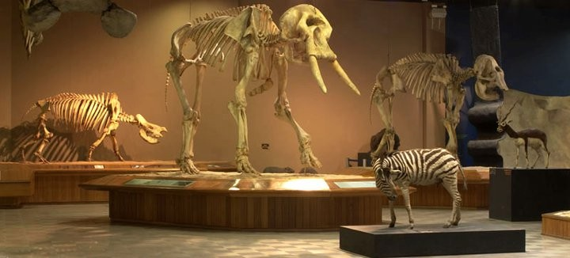

Museu de Ciências Naturais - PUC Minas
Criado em 1983, o Museu de Ciências Naturais desenvolve projetos de pesquisa em seus laboratórios e coleções de referência, promove cursos e encontros científicos, realiza exposições e atividades didáticas. O MCN PUC Minas possui uma das maiores coleções de paleontologia (60.000 fósseis) da América do Sul e cerca de 17.000 exemplares nas coleções de plantas, animais invertebrados, peixes, anfíbios, répteis, aves e mamíferos atuais. Fósseis de mamíferos, carapaças de tatu e réplicas de grandes dinossauros são algumas das atrações expostas na rica coleção de paleontologia do museu. Entre outras diversões, você pode explorar a réplica de uma caverna e acompanhar as primeiras escavações nas cavernas mineiras do século XIX, na mostra sobre o pesquisador dinamarquês Peter Lund.
